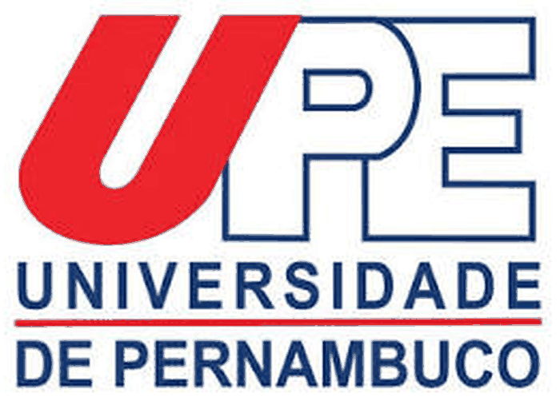

Ciência de Dados
Profa. Patricia Takako Endo · UPE Caruaru
Aulas
Materiais da disciplina, aula por aula: slides, páginas interativas e materiais de estudo.
Ordem sugerida de uso
- 1Slidesque foram apresentados em aula
- 2Página interativacom visualizações para explorar e testar valores
- 3Material de estudocom texto completo para estudo aprofundado
Os exemplos e as práticas usam dados públicos do SUS e casos dos projetos do dotLAB.
Sobre estes materiais. Todos os materiais desta disciplina foram preparados pela Profa. Patricia Takako Endo a partir do seu próprio material de aula, com o apoio do Claude, assistente de inteligência artificial da Anthropic.